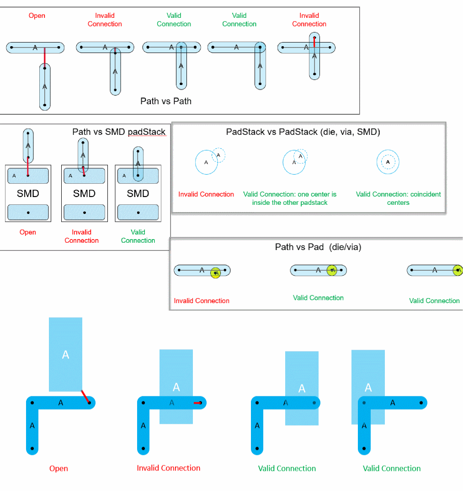

Extracting the Connectivity
Connectivity extraction is needed to update the connectivity in the layout and check that the physical connectivity of a layout matches its logical connectivity. During extraction, markers are created to represent the shorts, opens, and invalid connections. When the layout is modified, interactive extraction is done automatically on modified objects and areas.
Cadence SiP layout requires a valid connections while importing package designs from Virtuoso. For example, a connection between two paths is valid if the end point of one path is overlapping the center line of the other path.
- Run the extractor explicitly using the Connectivity – Extract Layout command to update and check the connectivity for the entire package layout for invalid connections.
- View and fix the violation markers in the Connectivity tab of the Annotation Browser assistant.
The following images show examples of open connections, invalid connections, and valid connections.

Related Topic
Return to top